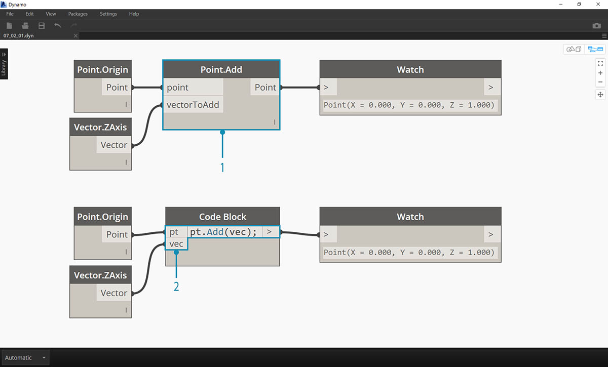
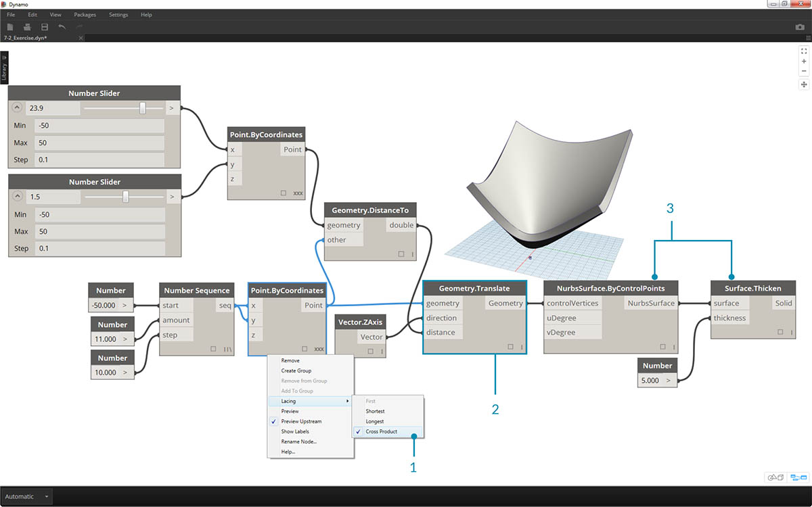
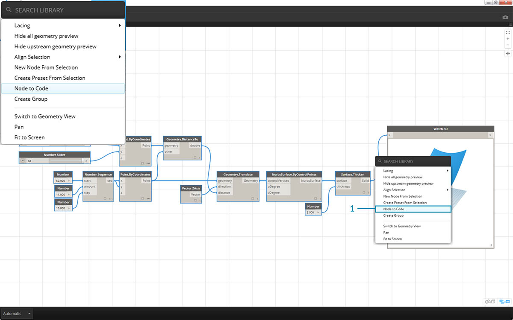

DesignScript 語法
您可能已注意到 Dynamo 中節點名稱的常見現象：每個節點都使用不含空格的「.」 語法。這是因為每個節點頂部的文字表示腳本的實際語法，「.」(即圓點符號) 會區分我們可以呼叫的可能方法中的元素。這將建立從視覺腳本到文字型腳本的輕鬆轉換。

作為圓點符號的一般類比，在 Dynamo 中如何處理參數式蘋果呢？以下是我們在決定吃蘋果之前先對蘋果執行的一些方法。(注意：這些方法不是實際的 Dynamo 方法)。
| 人類可讀 | 圓點符號 | 輸出 |
|---|---|---|
| 蘋果的顏色是什麼？ | Apple.color | 紅色 |
| 蘋果成熟了嗎？ | Apple.isRipe | true |
| 蘋果有多重？ | Apple.weight | 6 盎司。 |
| 蘋果來自何處？ | Apple.parent | 樹 |
| 蘋果建立哪些項目？ | Apple.children | 種子 |
| 這個蘋果是本地生長的嗎？ | Apple.distanceFromOrchard | 60 英里。 |
我不瞭解您，但根據以上表格的輸出進行判斷，似乎這是一個美味的蘋果。我認為我會執行 Apple.eat()。
代碼區塊中的圓點符號
記住蘋果的類比，接下來瞭解 Point.ByCoordinates，並展示如何使用以下代碼區塊來建立點：

在 Dynamo 中，code block 語法
Point.ByCoordinates(0,10);產生的結果與 Point.ByCoordinates 節點相同，只是我們可以使用一個節點來建立點。相較於將不同節點連接至「X」與「Y」，此方法更有效。
- 透過在代碼區塊中使用 Point.ByCoordinates，我們將以與即裝即用節點 (X,Y) 相同的順序指定輸入。
呼叫節點
您可以透過 Code Block 呼叫資源庫中的任何一般節點，只要該節點不是特殊的「使用者介面」節點 (具有特殊的使用者介面功能) 即可。例如，您可以呼叫 Circle.ByCenterPointRadius，但是呼叫 Watch 3D 節點意義不大。
一般節點 (資源庫中的大多數節點) 通常分為三種類型：
- Create - 可建立 (或建構) 項目
- Action - 可對某項目執行動作
- Query - 可取得既有項目的性質
您會發現資源庫在組織時考慮到了這些品類。在 Code Block 中呼叫時，對這三種類型方法 (或節點) 的處理方式不同。

Create
「Create」品類將從零開始建構幾何圖形。我們在代碼區塊中以從左至右的順序輸入值。這些輸入的順序與節點上從上到下的輸入順序相同：
對 Line.ByStartPointEndPoint 節點與代碼區塊中的對應語法進行比較，可以取得相同結果。
Action
動作是您對該類型的物件執行的行為。Dynamo 使用許多編碼語言中通用的圓點符號將動作套用至物件。確定物件後，輸入圓點，後接動作名稱。動作類型方法的輸入將放置在括號中，類似於建立類型的方法，只是您不必指定對應節點上看到的第一個輸入。我們改為指定執行動作時所依據的元素：

- Point.Add 節點是動作類型節點，因此語法稍有不同。
- 輸入是 (1) point 以及將加入點的 (2) vector。在 Code Block 中，我們已將點 (物件) 命名為「pt」。為了將命名為「vec」的向量加入至「pt」，我們會編寫 pt.add(vec ) 或採用「物件, 圓點, 動作」的格式。加入動作僅有一個輸入，也就是 Point.Add 節點的所有輸入減去第一個輸入。Point.Add 節點的第一個輸入是點本身。
Query
Query 類型方法會取得物件的性質。由於物件本身就是輸入，因此您不必指定任何輸入。不需要使用括號。

鑲邊的狀況怎樣？
節點的鑲邊與代碼區塊的鑲邊稍有不同。對於節點，使用者會在節點上按一下右鍵，然後選取要執行的鑲邊選項。對於代碼區塊，使用者針對資料的構建方式會有更多的控制。代碼區塊速寫方法使用複製指南來設定多個一維清單應採用的配對方式。角括號「<>」中的數字會定義所產生巢狀清單的階層：<1>、<2>、<3> 等。
- 在此範例中，我們使用速寫來定義兩個範圍 (本章的下一節將講述速寫的更多內容)。簡言之，
0..1;等效於{0,1}，-3..-7等效於{-3,-4,-5,-6,-7}。結果將產生包含 2 個 x 值與 5 個 y 值的清單。如果我們不使用複製指南與這些不相符的清單，則會取得包含兩個點的清單，這是長度最短的清單。使用複製指南，我們可以尋找 2 個 x 座標與 5 個 y 座標的所有可能組合 (即叉積)。- 使用語法
Point.ByCoordinates(x_vals<1>,y_vals<2>);，可以產生兩個清單，其中每個清單包含五個項目。- 使用語法
Point.ByCoordinates(x_vals<2>,y_vals<1>);，可以產生五個清單，其中每個清單包含兩個項目。
使用該表現法，我們也可以指定佔主要地位的清單：2 個清單 (各包含 5 個項目) 還是 5 個清單 (各包含 2 個項目)。在此範例中，若變更複製指南的順序，結果將產生網格中點列的清單或點欄的清單。
要編碼的節點
以上代碼區塊方法可能花一點時間才能習慣，而 Dynamo 中提供稱為「要編碼的節點」功能，可以讓程序更輕鬆。若要使用此功能，請在 Dynamo 圖表中選取一系列節點，在圖元區上按一下右鍵，然後選取「Node to Code」。Dynamo 會將這些節點及所有輸入與輸出縮攏到代碼區塊中！這不僅是強大的代碼區塊學習工具，也能讓您使用更高效的參數式 Dynamo 圖表。我們將使用「要編碼的節點」結束以下練習，因此請勿錯過。

練習
下載此練習隨附的範例檔案 (按一下右鍵，然後按一下「連結另存為...」)。附錄中提供範例檔案的完整清單。Dynamo-Syntax_Attractor-Surface.dyn
為了展示代碼區塊的強大功能，我們要將既有的牽引欄位定義轉換為代碼區塊形式。使用既有定義可展示代碼區塊與視覺腳本如何具有相關性，有助於學習 DesignScript 語法。
開始先重新建立以上影像中的定義 (或開啟範例檔案)。
- 請注意，Point.ByCoordinates 的 Lacing 已設定為 Cross Product。
- 網格中的每個點都會根據其距參考點的距離而在 Z 方向上移。
- 重新建立並增厚曲面，同時在幾何圖形上建立相對於距參考點距離的凸度。

- 我們從零開始，先建立參考點：
Point.ByCoordinates(x,y,0);。我們使用的 Point.ByCoordinates 語法與參考點節點上方指定的語法相同。- 將變數 x 與 y 插入至 code block，以便我們可以使用滑棒動態更新這些內容。
- 加入一些 sliders 至 code block 的輸入，它們的範圍是 -50 至 50。這樣我們可以跨越整個預設 Dynamo 網格。

- 在 code block 的第二行，我們定義了速寫以取代數字序列節點：
coordsXY = (-50..50..#11);。我們將在下一節詳細討論此內容。現在，請注意此速寫等效於視覺腳本中的 Number Sequence 節點。

- 現在，我們將從 coordsXY 序列建立點的網格。若要執行此作業，我們需要使用 Point.ByCoordinates 語法，但還需要以我們在視覺腳本中採用的相同方式，啟動清單的 Cross Product。為了執行此作業，我們輸入以下代碼行：
gridPts = Point.ByCoordinates(coordsXY<1>,coordsXY<2>,0);。角括號表示叉積參考。- 請注意，在 Watch3D 節點中，將顯示跨越 Dynamo 網格的點網格。

- 現在講解困難的部分：我們希望根據點距參考點的距離，將這些點的網格上移。首先，呼叫這一組新點 transPts。由於轉換是針對既有元素的動作，而不是使用
Geometry.Translate ...，因此我們使用gridPts.Translate。- 讀取圖元區上的實際節點，我們可以看到有三個輸入。已宣告要轉換的 geometry，因為我們將對該元素執行動作 (使用 gridPts.Translate)。其餘兩個輸入將插入到函數的括號內：direction 與 distance。
- 方向足夠簡單，我們使用
Vector.ZAxis()執行垂直移動。- 參考點與每個網格點之間的距離仍需要計算，因此我們使用相同方式對參考點執行此動作：
refPt.DistanceTo(gridPts)- 最後一行代碼將提供轉換點：
transPts = gridPts.Translate(Vector.ZAxis(),refPt.DistanceTo(gridPts));

- 現在，我們已經建立具有適當資料結構的點網格，可以建立 Nurbs 曲面。我們將使用
srf = NurbsSurface.ByControlPoints(transPts);建構曲面

- 最後，為了加入某些深度到曲面，我們使用
solid = srf.Thicken(5);來建構實體。在此案例中，我們使用代碼將曲面增厚了 5 個單位，不過可以始終將其宣告為變數 (例如將其稱為 厚度)，然後使用滑棒控制該值。
使用「要編碼的節點」簡化圖表
只需按一下按鈕，「要編碼的節點」功能即可自動執行我們剛剛完成的整個練習。這不僅在建立自訂定義及可重複使用的代碼區塊時功能強大，也是瞭解 Dynamo 中腳本編寫方式的非常有用的工具。

- 先使用練習的第 1 步驟中使用的既有視覺腳本。選取所有節點，在圖元區上按一下右鍵，然後選取 「Node to Code」。非常簡單。

Dynamo 已自動建立文字式版本的視覺圖表、鑲邊與全部項目。在您的視覺腳本上測試這一點，並釋放代碼區塊的強大功能！